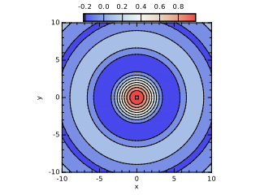

| Type | Visibility | Attributes | Name | Initial | |||
|---|---|---|---|---|---|---|---|
| integer, | public, | parameter | :: | N | = | 50 | |
| real(kind=wp), | public, | dimension(N) | :: | x | |||
| real(kind=wp), | public, | dimension(N) | :: | y | |||
| real(kind=wp), | public, | dimension(N,N) | :: | z | |||
| integer, | public | :: | i | ||||
| integer, | public | :: | j |
subroutine doContour
!! 
integer,parameter::N = 50
real(wp),dimension(N)::x,y
real(wp),dimension(N,N)::z
integer::i,j
x = linspace(-10.0_wp,10.0_wp,N)
y = linspace(-10.0_wp,10.0_wp,N)
forall(i=1:N,j=1:N)
z(i,j) = sin( sqrt(x(i)**2+y(j)**2) )/sqrt(x(i)**2+y(j)**2)
end forall
call figure()
call subplot(1,1,1,aspect=1.0_wp)
call xylim(mixval(x),mixval(y))
call contourf(x,y,z,10)
call contour(x,y,z,10)
call colorbar(z,5)
call ticks()
call labels('x','y','')
end subroutine doContour